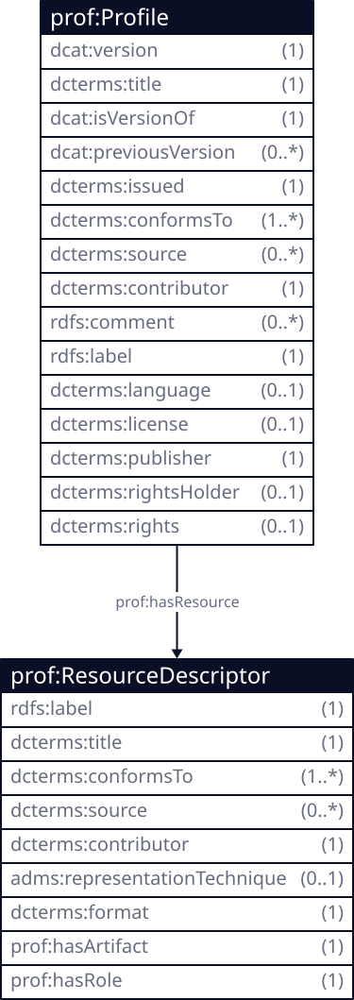

PROF-AP-CIM
Application profile of “The Profiles Vocabulary” (PROF) for describing CIM profiles.
3. Terminology
- application profile
-
A specification that constrains, extends, combines, or provides guidance or explanation about the usage of other specifications.
4. Schema

4.1. Namespaces
| Prefix | URI |
|---|---|
|
|
|
|
|
|
|
|
|
|
|
|
|
|
|
|
|
|
|
|
|
|
|
|
|
|
|
|
|
4.2. Class: prof:Profile
| URI |
A specification that constrains, extends, combines, or provides guidance or explanation about the usage of other specifications. This definition includes what are sometimes called “application profiles”, “metadata application profiles”, or “metadata profiles”.
| Property | Type | Description |
|---|---|---|
|
The version indicator (name or identifier) of a resource. |
|
|
A name given to the resource. |
|
|
A related resource of which the described resource is a version, edition, or adaptation. |
|
|
The previous version of a resource in a lineage. |
|
|
Date of formal issuance of the resource. |
|
|
An established standard to which the described resource conforms. |
|
|
A related resource from which the described resource is derived. |
|
|
An entity responsible for making contributions to the resource. |
|
|
An entity primarily responsible for making the resource. |
|
|
An account of the resource. |
|
|
A description of the subject resource. |
|
|
A human-readable name for the subject. |
|
|
A language of the resource. |
|
|
A legal document giving official permission to do something with the resource. |
|
|
An entity responsible for making the resource available. |
|
|
A person or organization owning or managing rights over the resource. |
|
|
Information about rights held in and over the resource. |
|
|
A resource which describes the nature of an artifact and the role it plays in relation to the profile. |
4.3. Class: prof:ResourceDescriptor
| Property | Type | Description |
|---|---|---|
|
A human-readable name for the subject. |
|
|
A name given to the resource. |
|
|
An established standard to which the described resource conforms. |
|
|
A related resource from which the described resource is derived. |
|
|
An account of the resource. |
|
|
More information about the format in which an asset distribution is released. This is different from the file format as, for example, a ZIP file (file format) could contain an XML schema (representation technique). |
|
|
The file format, physical medium, or dimensions of the resource. |
|
|
The URL of a downloadable file with particulars such as its format and role indicated by the resource descriptor. |
|
|
A description of a resource that defines an aspect - a particular part, feature or role - of a profile. |
Appendix A: Diagram Layout profile example
Any RDF serialization will do for profile instances, but it is recommended to make us of the JSON-LD context and write using YAML.
Source code (YAML-LD)
"@context": https://cim.ucaiug.io/dxprof-ap-cim/1.0/context.jsonld
id: https://cim.ucaiug.io/grid/DiagramLayout/2.1
type: prof:Profile
version: "2.1"
title: DiagramLayout-AP-v2-1
isVersionOf: https://cim.ucaiug.io/grid/DiagramLayout
priorVersion: https://cim.ucaiug.io/grid/DiagramLayout/2.0
issued: '2025-03-06T17:59:40+01:00'
conformsTo: https://cim.ucaiug.io/dxprof-ap-cim/1.0
source: iec61970cim17v40_iec61968cim13v13a_iec62325cim03v17a.eap
contributor:
- orcid:0000-0002-7167-7321
- orcid:0000-0001-7508-7428
creator: orcid:0009-0009-8211-926X
description: Diagram Layout application profile specific the expected data to be exchanges to describe a Common Information Model (CIM) Diagram Layout.
comment: Diagram Layout application profile defined by DX-PROF
label: Diagram Layout Application Profile 2.1
language: en-GB
license: http://www.apache.org/licenses/LICENSE-2.0
publisher: https://www.ucaiug.org/
rightsHolder: UCA International User Group
rights: Copyright
resource:
- id: https://cim.ucaiug.io/dcatcim/1.0#Vocabulary
type: prof:ResourceDescriptor
label: DCAT-CIM Constraints
title: DCAT-CIM-Cons-v1-0-0
description: Constraints for the Data Catalog Vocabulary (DCAT) with CIM extension profile described in SHACL.
representationTechnique: https://cim.ucaiug.io/codelist/representation-technique#rdfs
conformsTo: https://cim.ucaiug.io/prof/Constraints/1.0
format: https://www.iana.org/assignments/media-types/text/turtle
hasArtifact: https://cim.ucaiug.io/dcatcim/DCAT-CIM-Cons-v1-0-0.ttl
hasRole: role:constraints
- id: https://cim.ucaiug.io/grid/DiagramLayout/2.1#Vocabulary
label: Diagram Layout Vocabulary
title: DiagramLayout-Voc-v2-1-0
description: Vocabulary for the Diagram Layout profile described in RDFS-Plus.
conformsTo: https://cim.ucaiug.io/prof/Vocabulary/1.0
representationTechnique: https://cim.ucaiug.io/codelist/representation-technique#rdfs
format: https://www.iana.org/assignments/media-types/text/turtle
source: iec61970cim17v40_iec61968cim13v13a_iec62325cim03v17a.eap
hasArtifact: https://cim.ucaiug.io/grid/DiagramLayout-Voc-v2-1-0.ttl
hasRole: role:vocabulary
- id: https://cim.ucaiug.io/grid/DiagramLayout/2.1#Constraints
label: Diagram Layout Constraints
title: DiagramLayout-Cons-v2-1-0
description: Constraints for the Diagram Layout profile described in SHACL.
conformsTo: https://cim.ucaiug.io/prof/Constraints/1.0
representationTechnique: https://cim.ucaiug.io/codelist/representation-technique#shacl
format: https://www.iana.org/assignments/media-types/text/turtle
source: iec61970cim17v40_iec61968cim13v13a_iec62325cim03v17a.eap
hasArtifact: https://cim.ucaiug.io/grid/DiagramLayout-Voc-v2-1-0.ttl
hasRole: role:constraints
- id: https://cim.ucaiug.io/grid/DiagramLayout/2.1#Specification
label: Diagram Layout Specification
description: Document describing the human readable specification of the Diagram Layout application profile.
format: https://www.iana.org/assignments/media-types/application/pdf
hasArtifact: https://cim.ucaiug.io/grid/DiagramLayout_Profile_Specification_v2-1-0.pdf
hasRole: role:specificationNote how the user does not need to write any URIs or CURIEs by hand. Moreover, all the @ characters which indicate special JSON-LD syntax have been aliased
such that the user won’t be confused by them.
This YAML can trivially be converted to JSON, rendering a valid JSON-LD serialization of the profile instance:
Source code (JSON-LD)
{
"@context": {
"@base": "https://cim.ucaiug.io/grid/DiagramLayout/2.1#",
"id": "@id",
"adms": "http://www.w3.org/ns/adms#",
"type": "@type",
"rdf": "http://www.w3.org/1999/02/22-rdf-syntax-ns#",
"rdfs": "http://www.w3.org/2000/01/rdf-schema#",
"xsd": "http://www.w3.org/2001/XMLSchema#",
"dc": "http://purl.org/dc/elements/1.1/",
"dcterms": "http://purl.org/dc/terms/",
"dcat": "http://www.w3.org/ns/dcat#",
"owl": "http://www.w3.org/2002/07/owl#",
"skos": "http://www.w3.org/2004/02/skos/core#",
"cim": "https://cim.ucaiug.io/ns#",
"cims": "https://cim.ucaiug.io/schema-extensions#",
"prof": "http://www.w3.org/ns/dx/prof/",
"role": "http://www.w3.org/ns/dx/prof/role/",
"@vocab": "http://cim.ucaiug.io/grid/DiagramLayout",
"version": {
"@id": "dcat:version",
"@type": "xsd:string"
},
"isVersionOf": {
"@id": "dcat:isVersionOf",
"@type": "@id"
},
"priorVersion": {
"@id": "dcat:priorVersion",
"@type": "@id"
},
"issued": {
"@id": "dcterms:issued",
"@type": "xsd:dateTime"
},
"conformsTo": {
"@id": "dcterms:conformsTo",
"@type": "@id"
},
"source": {
"@id": "dcterms:source"
},
"contributor": {
"@id": "dcterms:contributor",
"@type": "@id"
},
"creator": {
"@id": "dcterms:creator",
"@type": "@id"
},
"description": {
"@id": "dcterms:description"
},
"title": {
"@id": "dcterms:title"
},
"comment": {
"@id": "rdfs:comment"
},
"label": {
"@id": "rdfs:label"
},
"language": {
"@id": "dcterms:language"
},
"license": {
"@id": "dcterms:license",
"@type": "@id"
},
"publisher": {
"@id": "dcterms:publisher",
"@type": "@id"
},
"rightsHolder": {
"@id": "dcterms:rightsHolder"
},
"rights": {
"@id": "dcterms:rights"
},
"resource": {
"@id": "prof:hasResource"
},
"representationTechnique": {
"@id": "adms:representationTechnique",
"@type": "@id"
},
"format": {
"@id": "dcterms:format",
"@type": "@id"
},
"hasArtifact": {
"@id": "prof:hasArtifact",
"@type": "@id"
},
"hasRole": {
"@id": "prof:hasRole",
"@type": "@id"
},
"orcid": {
"@id": "https://orcid.org/",
"@type": "@id"
}
},
"id": "https://cim.ucaiug.io/grid/DiagramLayout/2.1",
"type": "prof:Profile",
"version": "2.1",
"title": "DiagramLayout-AP-v2-1",
"isVersionOf": "https://cim.ucaiug.io/grid/DiagramLayout",
"priorVersion": "https://cim.ucaiug.io/grid/DiagramLayout/2.0",
"issued": "2025-03-06T17:59:40+01:00",
"conformsTo": "https://cim.ucaiug.io/dxprof-ap-cim/1.0",
"source": "iec61970cim17v40_iec61968cim13v13a_iec62325cim03v17a.eap",
"contributor": [
"orcid:0000-0002-7167-7321",
"orcid:0000-0001-7508-7428"
],
"creator": "orcid:0009-0009-8211-926X",
"description": "Diagram Layout application profile specific the expected data to be exchanges to describe a Common Information Model (CIM) Diagram Layout.",
"comment": "Diagram Layout application profile defined by DX-PROF",
"label": "Diagram Layout Application Profile 2.1",
"language": "en-GB",
"license": "http://www.apache.org/licenses/LICENSE-2.0",
"publisher": "https://www.ucaiug.org/",
"rightsHolder": "UCA International User Group",
"rights": "Copyright",
"resource": [
{
"id": "https://cim.ucaiug.io/dcatcim/1.0#Vocabulary",
"type": "prof:ResourceDescriptor",
"label": "DCAT-CIM Constraints",
"title": "DCAT-CIM-Cons-v1-0-0",
"description": "Constraints for the Data Catalog Vocabulary (DCAT) with CIM extension profile described in SHACL.",
"representationTechnique": "https://cim.ucaiug.io/codelist/representation-technique#rdfs",
"conformsTo": "https://cim.ucaiug.io/prof/Constraints/1.0",
"format": "https://www.iana.org/assignments/media-types/text/turtle",
"hasArtifact": "https://cim.ucaiug.io/dcatcim/DCAT-CIM-Cons-v1-0-0.ttl",
"hasRole": "role:constraints"
},
{
"id": "https://cim.ucaiug.io/grid/DiagramLayout/2.1#Vocabulary",
"label": "Diagram Layout Vocabulary",
"title": "DiagramLayout-Voc-v2-1-0",
"description": "Vocabulary for the Diagram Layout profile described in RDFS-Plus.",
"conformsTo": "https://cim.ucaiug.io/prof/Vocabulary/1.0",
"representationTechnique": "https://cim.ucaiug.io/codelist/representation-technique#rdfs",
"format": "https://www.iana.org/assignments/media-types/text/turtle",
"source": "iec61970cim17v40_iec61968cim13v13a_iec62325cim03v17a.eap",
"hasArtifact": "https://cim.ucaiug.io/grid/DiagramLayout-Voc-v2-1-0.ttl",
"hasRole": "role:vocabulary"
},
{
"id": "https://cim.ucaiug.io/grid/DiagramLayout/2.1#Constraints",
"label": "Diagram Layout Constraints",
"title": "DiagramLayout-Cons-v2-1-0",
"description": "Constraints for the Diagram Layout profile described in SHACL.",
"conformsTo": "https://cim.ucaiug.io/prof/Constraints/1.0",
"representationTechnique": "https://cim.ucaiug.io/codelist/representation-technique#shacl",
"format": "https://www.iana.org/assignments/media-types/text/turtle",
"source": "iec61970cim17v40_iec61968cim13v13a_iec62325cim03v17a.eap",
"hasArtifact": "https://cim.ucaiug.io/grid/DiagramLayout-Voc-v2-1-0.ttl",
"hasRole": "role:constraints"
},
{
"id": "https://cim.ucaiug.io/grid/DiagramLayout/2.1#Specification",
"label": "Diagram-Layout-Specification-v2-1-0",
"description": "Document describing the human readable specification of the Diagram Layout application profile.",
"format": "https://www.iana.org/assignments/media-types/application/pdf",
"hasArtifact": "https://cim.ucaiug.io/grid/DiagramLayout_Profile_Specification_v2-1-0.pdf",
"hasRole": "role:specification"
}
]
}References
-
[RFC2119] S. Bradner. 1997. Key words for use in RFCs to Indicate Requirement Levels.